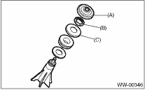
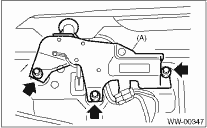

1. Disconnect the ground cable from the battery.
2. Remove the rear wiper arm.
3. Remove the cap (A), nut (B), and spacer (C) from rear wiper shaft.

4. Remove the rear gate lower trim. 
5. Unclip the clip of harness and disconnect connector of wiper motor.
6. Loosen the bolts to remove the wiper motor assembly (A).
